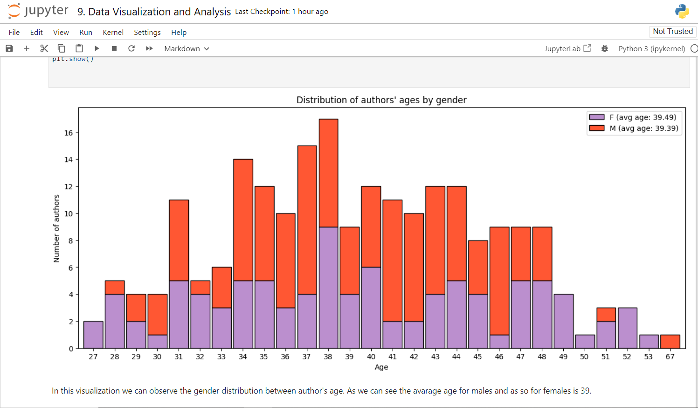
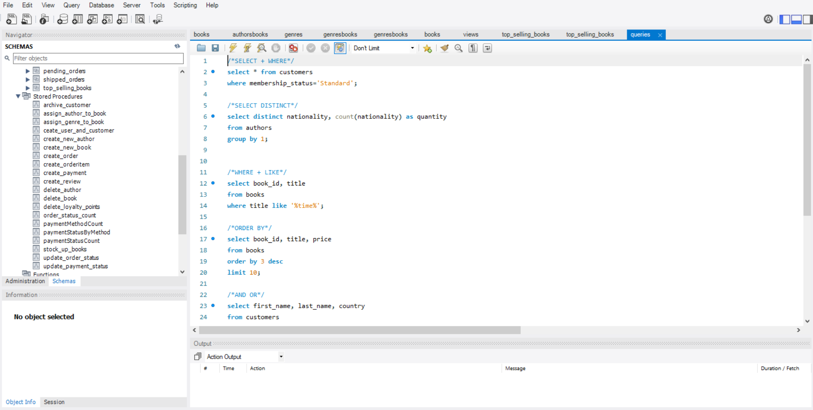
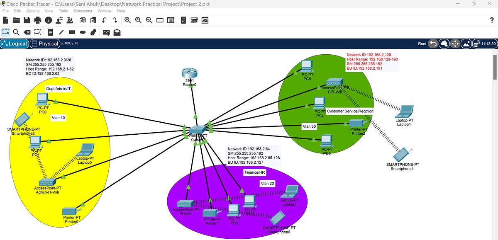

I’m currently obtaining my CCNA certification from Cisco, transitioning into network administration
with a focus on building strong technical skills. With a background in database administration and programming,
I have advanced experience in SQL, Python, and Java, and can design and manage databases from the ground up.
Now, by deepening my knowledge in network administration,
I’m preparing for a future move into cybersecurity, where I can leverage my combined expertise
to tackle more complex challenges in IT.

For my database course final project, I undertook a comprehensive journey, starting from conceptualizing business requirements and crafting an Entity-Relationship Diagram (EER) schema to designing and implementing a robust database system. The project's primary objectives included not only creating a functional database but also ensuring data security, accessibility, and meaningful analysis.

A brief overview with all the sql queries that I have practiced and learned while doing my Database administration course and also programmation course. Includes such queries as:
Select queries, Join queries, Aggregate queries, Subqueries, Conditional queries and Data Modification queries.

An additional course that I`m currently doing to better prepare myself for Cisco CCNA exam. Here you can see all the Pakcet Tracer labs that I have done, with comprehensive explanations. This course is provided by Jeremy's IT lab found on Youtube.

Ejercicios de curso superior de Deusto Formación para preperarme para exámen. Ejercicios resueltos, no obligatorios, de todo tipo.
s